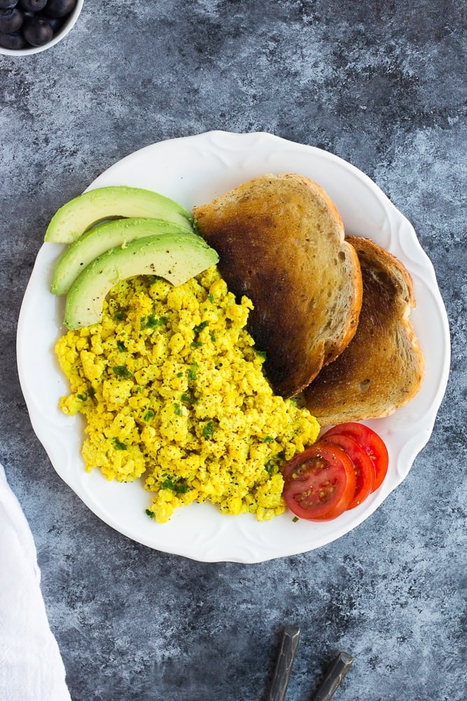

Tofu Scramble

Description
A vegan tofu scramble recipe from noracooks.com that is sure to satisfy you or any vegan in your life.
Oil can be omitted from the recipe, and any non-dairy milk can be used as long as it is unsweetened and unflavored.
Ingredients
- 1 tablespoon olive oil
- (1) 16 oz block firm tofu
- 2 tablespoon nutritional yeast
- 1/2 teaspoon salt, or more to taste
- 1/4 teaspoon turmeric
- 1/4 teaspoon garlic powder
- 2 tablespoons non-dairy milk, unsweetened and unflavored
Steps
- Heat the olive oil in a pan over medium heat. Mash the block of tofu right in the pan, with a potato masher or a fork. You can also crumble it into the pan with your hands. Cook, stirring frequently, for 3-4 minutes until the water from the tofu is mostly gone.
- Now add the nutritional yeast, salt, turmeric and garlic powder. Cook and stir constantly for about 5 minutes.
- Pour the non-dairy milk into the pan, and stir to mix. Serve immediately with sliced avocado, hot sauce, parsley, steamed kale, toast or any other breakfast item.
back to home